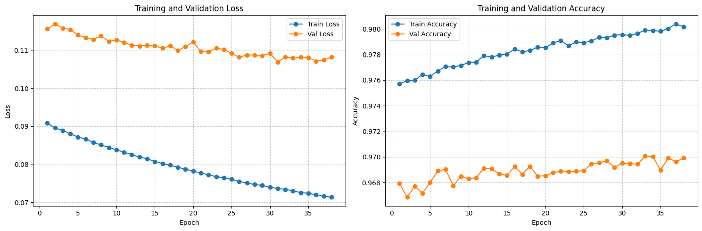
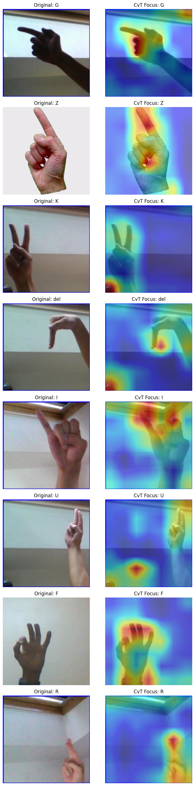
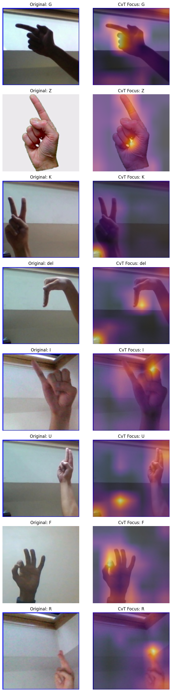
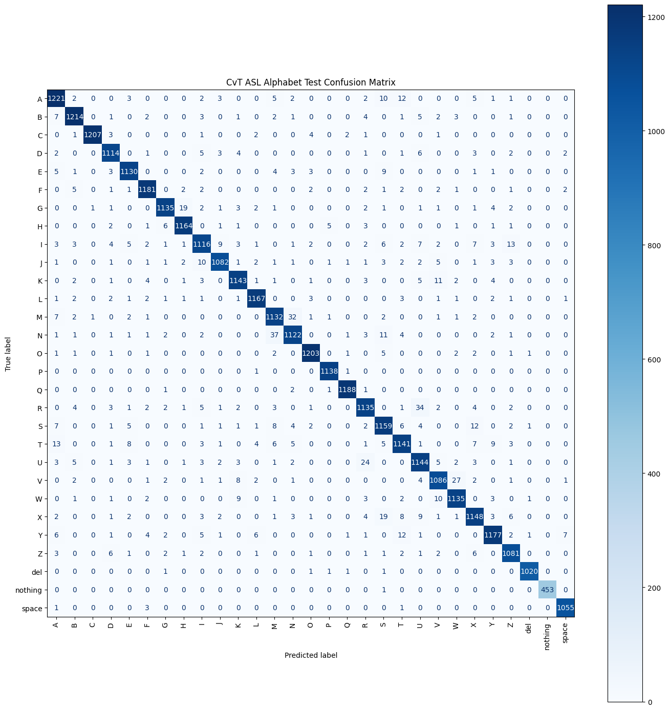
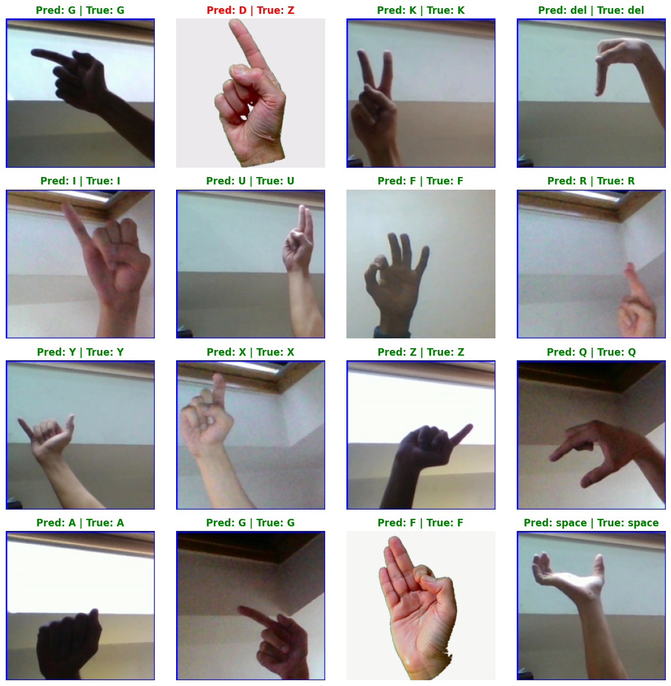
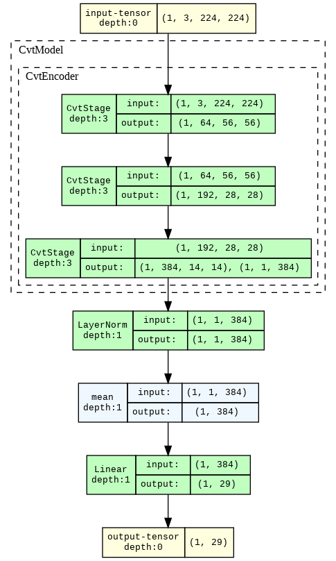

Role: Transformer-Based Spatial Modeling
Objective: Train and evaluate a CvT architecture for
static ASL alphabet recognition using hierarchical convolutional token
embeddings with attention-based spatial reasoning.
This notebook establishes the CvT-based spatial modeling framework for static sign language recognition on the ASL Alphabet dataset.
The primary goal is to benchmark Convolutional Vision Transformers as a transformer-family alternative to ViT, while preserving fair comparisons against CNN baselines under the same official data splits.
This notebook also serves as a critical upstream dependency for later stages involving temporal sequence modeling and attention-based interpretability analysis.
Official stratified dataset splits generated during Stage 1 are used exclusively:
asl_train.csvasl_val.csvasl_test.csvNo independent data splitting is performed within this notebook.
All preprocessing operations are applied dynamically using shared
utilities from the centralized src/ pipeline.
Original raw dataset directories remain unchanged.
data/metadata/asl_train.csvdata/metadata/asl_val.csvdata/metadata/asl_test.csvsrc/data/dataloaders.pysrc/data/preprocessing.pyoutputs/checkpoints/cvt_asl_best.pthoutputs/metrics/cvt_asl_metrics.jsonoutputs/predictions/cvt_attention_weights.ptfrom google.colab import drive
drive.mount('/content/drive')Mounted at /content/drive
Copy Project Files This cell copies the DL_PROJECT.zip archive from your Google Drive to the Colab environment's content directory. This ensures faster access to project files during execution.
!cp /content/drive/MyDrive/DL_PROJECT.zip /content/This cell unzips the copied project archive into the
/content/ directory and then removes the zip file to save
space.
!unzip -q /content/DL_PROJECT.zip -d /content/ && rm -f /content/DL_PROJECT.zipThis initializes spatial transformer architectures while strictly reusing the official Stage 1 train/validation/test metadata splits. This preserves reproducibility and keeps benchmark comparisons fair across different models.
We configure the runtime device, deterministic seeds, and a robust project root resolver so notebook execution works from typical Jupyter working directories.
# Core libraries
import os
import json
import random
import sys
from pathlib import Path
from copy import deepcopy
from pathlib import Path
# Data handling
import numpy as np
import pandas as pd
# Image handling
import builtins
import PIL
from PIL import Image
# PyTorch and training utilities
import gc
import torch
from torch import amp
import torch.nn as nn
import torch.optim as optim
from torch.utils.data import DataLoader
# Metrics and model utilities
from sklearn.metrics import accuracy_score, f1_score, precision_score, recall_score
from tqdm.auto import tqdm
# ============================================================
# Project Root Resolver
# ============================================================
def resolve_project_root(start_path: Path) -> Path:
for candidate in [start_path]:
if (candidate / "src").exists() and (candidate / "data").exists():
return candidate
raise FileNotFoundError("Could not locate project root containing 'src' and 'data' directories.")
# project root path
PROJECT_ROOT = Path("/content/DL_PROJECT")
# Change the current working directory
os.chdir(PROJECT_ROOT)
# Verify we are in the right place
print("Current Working Directory:", os.getcwd())
# ============================================================
# Device and Reproducibility Setup
# ============================================================
if torch.cuda.is_available():
DEVICE = torch.device("cuda")
elif hasattr(torch.backends, "mps") and torch.backends.mps.is_available():
DEVICE = torch.device("mps")
else:
DEVICE = torch.device("cpu")
SEED = 42
NUM_CLASSES = 29
random.seed(SEED)
np.random.seed(SEED)
torch.manual_seed(SEED)
if torch.cuda.is_available():
torch.cuda.manual_seed_all(SEED)
mps_available = hasattr(torch.backends, "mps") and torch.backends.mps.is_available()
print("+++++ Imports completed successfully")
print(f"PyTorch version: {torch.__version__}")
print(f"CUDA available: {torch.cuda.is_available()}")
print(f"MPS available: {mps_available}")
print("Image handling library loaded: PIL (Image)")
print(f"Project root: {PROJECT_ROOT}")
print(f"Device: {DEVICE}")Current Working Directory: /content/DL_PROJECT
+++++ Imports completed successfully
PyTorch version: 2.10.0+cu128
CUDA available: True
MPS available: False
Image handling library loaded: PIL (Image)
Project root: /content/DL_PROJECT
Device: cuda
!nvidia-smiMon May 25 18:03:28 2026
+-----------------------------------------------------------------------------------------+
| NVIDIA-SMI 580.82.07 Driver Version: 580.82.07 CUDA Version: 13.0 |
+-----------------------------------------+------------------------+----------------------+
| GPU Name Persistence-M | Bus-Id Disp.A | Volatile Uncorr. ECC |
| Fan Temp Perf Pwr:Usage/Cap | Memory-Usage | GPU-Util Compute M. |
| | | MIG M. |
|=========================================+========================+======================|
| 0 Tesla T4 Off | 00000000:00:04.0 Off | 0 |
| N/A 44C P8 12W / 70W | 3MiB / 15360MiB | 0% Default |
| | | N/A |
+-----------------------------------------+------------------------+----------------------+
+-----------------------------------------------------------------------------------------+
| Processes: |
| GPU GI CI PID Type Process name GPU Memory |
| ID ID Usage |
|=========================================================================================|
| No running processes found |
+-----------------------------------------------------------------------------------------+
To enforce data integrity and avoid split leakage, we directly import
create_asl_dataloaders from
src.data.dataloaders.
This shared utility already applies dynamic RGB conversion, resizing to 224 x 224, tensor conversion, and ImageNet normalization that are compatible with pretrained transformer backbones. No custom preprocessing or alternate split creation is introduced here.
# check contents of the folder
print(f"Contents of PROJECT_ROOT ({PROJECT_ROOT}):")
for item in os.listdir(PROJECT_ROOT):
print(f"- {item}")
expected_file_path = PROJECT_ROOT / "src" / "data" / "dataloaders.py"
if expected_file_path.exists():
print(f"\nSuccess: The file {expected_file_path} exists.")
else:
print(f"\nError: The file {expected_file_path} does NOT exist.")
# ==========================================================
# PATH MONKEY PATCH (Fixes path backslashes in-memory)
# ==========================================================
# checked if '_is_patched' exists to prevent creating an infinite loop
if not hasattr(PIL.Image, '_is_patched'):
original_open = PIL.Image.open
def patched_open(fp, mode="r", formats=None):
if isinstance(fp, str):
fp = fp.replace("\\", "/")
elif hasattr(fp, "as_posix"):
fp = str(fp).replace("\\", "/")
return original_open(fp, mode, formats)
PIL.Image.open = patched_open
PIL.Image._is_patched = True
print("\nPath-fix patch applied successfully.")
else:
print("\nPatch already active! Skipping recursion.")Contents of PROJECT_ROOT (/content/DL_PROJECT):
- notebook
- 03_asl_static_transformers_v2.ipynb
- 03_asl_static_transformers_base_freeze_head_finetuned_v1.ipynb
- Stage3_Deblina_asl_static_transformers_cvt.ipynb
- vit_asl_metrics.json
- data
- project_structure
- 03_asl_static_transformers_v1.ipynb
- .DS_Store
- outputs
- .vscode
- requirements.txt
- .venv
- README.md
- config
- src
Success: The file /content/DL_PROJECT/src/data/dataloaders.py exists.
Path-fix patch applied successfully.
from src.data.dataloaders import create_asl_dataloaders
train_csv = PROJECT_ROOT / "data" / "metadata" / "asl_train.csv"
val_csv = PROJECT_ROOT / "data" / "metadata" / "asl_val.csv"
test_csv = PROJECT_ROOT / "data" / "metadata" / "asl_test.csv"
# Updated batch size and workers for efficiency
BATCH_SIZE = 128
NUM_WORKERS = 1
train_loader, val_loader, test_loader = create_asl_dataloaders(
project_root=PROJECT_ROOT,
train_csv=train_csv,
val_csv=val_csv,
test_csv=test_csv,
batch_size=BATCH_SIZE,
num_workers=NUM_WORKERS,
image_size=224,
)
images, labels = next(iter(train_loader))
print(f"images shape: {images.shape}")
print(f"labels shape: {labels.shape}")images shape: torch.Size([128, 3, 224, 224])
labels shape: torch.Size([128])
This notebook is now explicitly configured for CvT-only training and evaluation.
We instantiate the 'microsoft/cvt-13' model from Hugging Face Transformers with ImageNet pretrained weights and replace its classification head to predict 29 ASL classes.
Training employs feature extraction (head-only training): the pre-trained CvT backbone is frozen (its parameters are not updated), and only the newly added classification head is trained. This strategy utilizes CrossEntropyLoss and the AdamW optimizer, focusing computational effort on adapting the classification layer to the domain-shifted gesture data.
Model Name: cvt_13 (from
timm)
CvT-13 combines convolutional token embedding with transformer attention, giving stronger local spatial bias than plain ViT. This generally improves data efficiency and robustness for medium-sized image classification tasks such as ASL static gesture recognition.
# Install transformers and upgrade timm
!pip install --upgrade -q timm transformers━━━━━━━━━━━━━━━━━━━━━━━━━━━━━━━━━━━━━━━━ 40.2/40.2 kB 4.0 MB/s eta 0:00:00
━━━━━━━━━━━━━━━━━━━━━━━━━━━━━━━━━━━━━━━━ 2.6/2.6 MB 25.2 MB/s eta 0:00:00
━━━━━━━━━━━━━━━━━━━━━━━━━━━━━━━━━━━━━━━━ 10.8/10.8 MB 98.0 MB/s eta 0:00:00
def extract_logits(model_output):
"""Normalize model outputs so both timm and HF-style outputs work."""
if isinstance(model_output, torch.Tensor):
return model_output
if hasattr(model_output, "logits") and model_output.logits is not None:
return model_output.logits
if isinstance(model_output, (tuple, list)) and len(model_output) > 0:
return model_output[0]
raise TypeError(f"Unsupported model output type: {type(model_output)}")from transformers import AutoFeatureExtractor, CvtForImageClassification
def build_cvt_model_base(num_classes: int = 29) -> nn.Module:
try:
model_id = 'microsoft/cvt-13'
print(f"Loading {model_id} with frozen backbone...")
# Load pretrained model
model = CvtForImageClassification.from_pretrained(model_id)
# Freeze all parameters in the base model
for param in model.parameters():
param.requires_grad = False
# Replace the classifier head; its parameters will be trainable
# In HF CvtForImageClassification, the head is at model.classifier
in_features = model.classifier.in_features
model.classifier = nn.Linear(in_features, num_classes)
return model
except Exception as exc:
raise RuntimeError(f"Failed to load {model_id}: {exc}") from exc
MODEL_NAME = "cvt"
model = build_cvt_model_base(num_classes=NUM_CLASSES)
model = model.to(DEVICE)
criterion = nn.CrossEntropyLoss()
# Only optimize parameters with requires_grad=True (the new head)
optimizer = optim.AdamW(filter(lambda p: p.requires_grad, model.parameters()), lr=1e-4, weight_decay=1e-4)
print(f"Initialized model: {MODEL_NAME} (microsoft/cvt-13) [Frozen Backbone]")
print(f"Total parameters: {sum(p.numel() for p in model.parameters()):,}")
print(f"Trainable parameters: {sum(p.numel() for p in model.parameters() if p.requires_grad):,}")Loading microsoft/cvt-13 with frozen backbone...
/usr/local/lib/python3.12/dist-packages/huggingface_hub/utils/_auth.py:93: UserWarning:
The secret `HF_TOKEN` does not exist in your Colab secrets.
To authenticate with the Hugging Face Hub, create a token in your settings tab (https://huggingface.co/settings/tokens), set it as secret in your Google Colab and restart your session.
You will be able to reuse this secret in all of your notebooks.
Please note that authentication is recommended but still optional to access public models or datasets.
warnings.warn(
{"model_id":"5b7ac5314321412a8adf862565a67f77","version_major":2,"version_minor":0}Warning: You are sending unauthenticated requests to the HF Hub. Please set a HF_TOKEN to enable higher rate limits and faster downloads.
WARNING:huggingface_hub.utils._http:Warning: You are sending unauthenticated requests to the HF Hub. Please set a HF_TOKEN to enable higher rate limits and faster downloads.
{"model_id":"b1b9134b23f141ecb94776187c3cf1da","version_major":2,"version_minor":0}{"model_id":"92733716be8a49089850723f1b15d591","version_major":2,"version_minor":0}Initialized model: cvt (microsoft/cvt-13) [Frozen Backbone]
Total parameters: 19,623,645
Trainable parameters: 11,165
This section defines modular train/validation loops that track epoch-wise loss and accuracy for CvT training.
We checkpoint the best-performing model using validation accuracy and
save it to outputs/checkpoints/cvt_asl_best.pth.
import torch.utils.data as data_utils
import torch.nn as nn
from torchvision import transforms
from tqdm import tqdm
def extract_features(model, loader, device):
"""Extracts features from the frozen base of the cvt model."""
model.eval()
# In HF CvtForImageClassification, the head is model.classifier
# Temporarily remove the head to isolate the feature extractor base
original_head = model.classifier
model.classifier = nn.Identity()
all_features = []
all_labels = []
print("Extracting features once for caching...")
with torch.no_grad():
for batch_images, batch_labels in tqdm(loader, desc="Extracting"):
batch_images = batch_images.to(device)
# model returns ImageClassifierOutput; we want the .logits (which are now features due to Identity)
output = model(batch_images)
features = output.logits
all_features.append(features.cpu())
all_labels.append(batch_labels.cpu())
# Restore the head back to the model immediately
model.classifier = original_head
return torch.cat(all_features), torch.cat(all_labels)
# =====================================================================
# FAST EXTRACTION PIPELINE (Fix B)
# =====================================================================
print("Swapping to fast extraction transforms...")
extraction_transforms = transforms.Compose([
transforms.Resize((224, 224)),
transforms.ToTensor(),
transforms.Normalize(mean=[0.485, 0.456, 0.406], std=[0.229, 0.224, 0.225])
])
# Save original transforms to restore later if needed
orig_train_transforms = train_loader.dataset.transform
orig_val_transforms = val_loader.dataset.transform
orig_test_transforms = test_loader.dataset.transform
# Apply fast transforms
train_loader.dataset.transform = extraction_transforms
val_loader.dataset.transform = extraction_transforms
test_loader.dataset.transform = extraction_transforms
# Create temporary fast loaders with num_workers=0 to kill CPU overhead
fast_train_loader = data_utils.DataLoader(
train_loader.dataset, batch_size=BATCH_SIZE * 2, shuffle=False, num_workers=0
)
fast_val_loader = data_utils.DataLoader(
val_loader.dataset, batch_size=BATCH_SIZE * 2, shuffle=False, num_workers=0
)
fast_test_loader = data_utils.DataLoader(
test_loader.dataset, batch_size=BATCH_SIZE * 2, shuffle=False, num_workers=0
)
# 1. Extract and Cache Features using the FAST loaders
train_features, train_labels = extract_features(model, fast_train_loader, DEVICE)
val_features, val_labels = extract_features(model, fast_val_loader, DEVICE)
test_features, test_labels = extract_features(model, fast_test_loader, DEVICE)
# =====================================================================
# RESTORE ORIGINAL TRANSFORMS
# =====================================================================
# Restore original transforms
train_loader.dataset.transform = orig_train_transforms
val_loader.dataset.transform = orig_val_transforms
test_loader.dataset.transform = orig_test_transforms
# =====================================================================
# Create specialized TensorDatasets for lightning-fast training
cached_train_loader = data_utils.DataLoader(
data_utils.TensorDataset(train_features, train_labels),
batch_size=BATCH_SIZE, shuffle=True
)
cached_val_loader = data_utils.DataLoader(
data_utils.TensorDataset(val_features, val_labels),
batch_size=BATCH_SIZE, shuffle=False
)
cached_test_loader = data_utils.DataLoader(
data_utils.TensorDataset(test_features, test_labels),
batch_size=BATCH_SIZE, shuffle=False
)
Swapping to fast extraction transforms...
Extracting features once for caching...
Extracting: 100%|██████████| 610/610 [23:23<00:00, 2.30s/it]
Extracting features once for caching...
Extracting: 100%|██████████| 131/131 [04:54<00:00, 2.25s/it]
Extracting features once for caching...
Extracting: 100%|██████████| 131/131 [04:54<00:00, 2.24s/it]
def run_cached_epoch(
head_model: nn.Module,
loader: data_utils.DataLoader,
criterion: nn.Module,
optimizer: torch.optim.Optimizer = None,
device: torch.device = DEVICE,
scaler: torch.amp.GradScaler = None,
):
is_train = optimizer is not None
head_model.train() if is_train else head_model.eval()
running_loss = 0.0
running_correct = 0
total_samples = 0
context = torch.enable_grad() if is_train else torch.no_grad()
with context:
for batch_features, batch_labels in loader:
# Send the pre-extracted features straight to the active device
batch_features = batch_features.to(device, non_blocking=True)
batch_labels = batch_labels.to(device, non_blocking=True)
if is_train:
optimizer.zero_grad(set_to_none=True)
with torch.amp.autocast(device_type=device.type, enabled=(device.type == "cuda")):
logits = extract_logits(head_model(batch_features))
loss = criterion(logits, batch_labels)
if is_train:
if scaler is not None:
scaler.scale(loss).backward()
scaler.step(optimizer)
scaler.update()
else:
loss.backward()
optimizer.step()
preds = torch.argmax(logits, dim=1)
batch_size = batch_labels.size(0)
running_loss += loss.item() * batch_size
running_correct += (preds == batch_labels).sum().item()
total_samples += batch_size
return running_loss / max(total_samples, 1), running_correct / max(total_samples, 1)
# Isolate the classification head model
classification_head = model.classifier.to(DEVICE)
# 2. Re-bind the optimizer directly to the isolated head's weights
optimizer_head = torch.optim.Adam(classification_head.parameters(), lr=1e-3)
scaler = torch.amp.GradScaler(device="cuda") if DEVICE.type == "cuda" else None
NUM_EPOCHS = 100
PATIENCE = 5 # Number of epochs to wait for improvement
MIN_DELTA = 0.0001 # Minimum change to be considered an improvement
best_val_loss = float('inf')
best_val_acc = -1.0 # Keep this for saving the best model based on accuracy
patience_counter = 0
history = []print(f"\nStarting cached training for {NUM_EPOCHS} epochs...")
for epoch in range(1, NUM_EPOCHS + 1):
train_loss, train_acc = run_cached_epoch(classification_head, cached_train_loader, criterion, optimizer_head, DEVICE, scaler)
val_loss, val_acc = run_cached_epoch(classification_head, cached_val_loader, criterion, None, DEVICE)
history.append({"epoch": epoch, "train_loss": train_loss, "train_accuracy": train_acc, "val_loss": val_loss, "val_accuracy": val_acc})
print(f"Epoch {epoch:02d}/{NUM_EPOCHS} | train_loss={train_loss:.4f}, train_acc={train_acc:.4f} | val_loss={val_loss:.4f}, val_acc={val_acc:.4f}")
# Check for improvement in loss and accuracy for patience reset
loss_improved_significantly = val_loss < best_val_loss - MIN_DELTA
accuracy_improved_significantly = val_acc > best_val_acc + MIN_DELTA # Use MIN_DELTA for accuracy as well
if loss_improved_significantly or accuracy_improved_significantly:
patience_counter = 0 # Reset patience
if loss_improved_significantly:
best_val_loss = val_loss # Update best loss only if it improved significantly
print(f"Validation loss improved to {best_val_loss:.4f}.")
else:
patience_counter += 1
print(f"Neither validation loss nor accuracy improved significantly (within {MIN_DELTA} threshold). Patience: {patience_counter}/{PATIENCE}")
# Always save the model if current accuracy is the absolute best so far
if val_acc > best_val_acc:
best_val_acc = val_acc
# Correctly update the HF model's classifier
model.classifier = classification_head
checkpoint_path = PROJECT_ROOT / "outputs" / "checkpoints" / "cvt_asl_best.pth"
checkpoint_path.parent.mkdir(parents=True, exist_ok=True)
torch.save(model.state_dict(), checkpoint_path)
print(f"--> New best validation accuracy! Saved complete model state to: {checkpoint_path.name}")
if patience_counter >= PATIENCE:
print(f"Early stopping triggered after {patience_counter} epochs without significant improvement.")
break
Starting cached training for 100 epochs...
Epoch 01/100 | train_loss=0.0908, train_acc=0.9757 | val_loss=0.1156, val_acc=0.9679
Validation loss improved to 0.1156.
--> New best validation accuracy! Saved complete model state to: cvt_asl_best.pth
Epoch 02/100 | train_loss=0.0896, train_acc=0.9759 | val_loss=0.1169, val_acc=0.9669
Neither validation loss nor accuracy improved significantly (within 0.0001 threshold). Patience: 1/5
Epoch 03/100 | train_loss=0.0889, train_acc=0.9760 | val_loss=0.1158, val_acc=0.9677
Neither validation loss nor accuracy improved significantly (within 0.0001 threshold). Patience: 2/5
Epoch 04/100 | train_loss=0.0880, train_acc=0.9764 | val_loss=0.1154, val_acc=0.9672
Validation loss improved to 0.1154.
Epoch 05/100 | train_loss=0.0872, train_acc=0.9763 | val_loss=0.1140, val_acc=0.9680
Validation loss improved to 0.1140.
--> New best validation accuracy! Saved complete model state to: cvt_asl_best.pth
Epoch 06/100 | train_loss=0.0867, train_acc=0.9767 | val_loss=0.1133, val_acc=0.9689
Validation loss improved to 0.1133.
--> New best validation accuracy! Saved complete model state to: cvt_asl_best.pth
Epoch 07/100 | train_loss=0.0858, train_acc=0.9771 | val_loss=0.1128, val_acc=0.9690
Validation loss improved to 0.1128.
--> New best validation accuracy! Saved complete model state to: cvt_asl_best.pth
Epoch 08/100 | train_loss=0.0851, train_acc=0.9770 | val_loss=0.1138, val_acc=0.9678
Neither validation loss nor accuracy improved significantly (within 0.0001 threshold). Patience: 1/5
Epoch 09/100 | train_loss=0.0845, train_acc=0.9771 | val_loss=0.1123, val_acc=0.9685
Validation loss improved to 0.1123.
Epoch 10/100 | train_loss=0.0838, train_acc=0.9774 | val_loss=0.1127, val_acc=0.9683
Neither validation loss nor accuracy improved significantly (within 0.0001 threshold). Patience: 1/5
Epoch 11/100 | train_loss=0.0832, train_acc=0.9774 | val_loss=0.1121, val_acc=0.9684
Validation loss improved to 0.1121.
Epoch 12/100 | train_loss=0.0826, train_acc=0.9779 | val_loss=0.1113, val_acc=0.9691
Validation loss improved to 0.1113.
--> New best validation accuracy! Saved complete model state to: cvt_asl_best.pth
Epoch 13/100 | train_loss=0.0819, train_acc=0.9778 | val_loss=0.1111, val_acc=0.9691
Validation loss improved to 0.1111.
Epoch 14/100 | train_loss=0.0815, train_acc=0.9780 | val_loss=0.1113, val_acc=0.9687
Neither validation loss nor accuracy improved significantly (within 0.0001 threshold). Patience: 1/5
Epoch 15/100 | train_loss=0.0807, train_acc=0.9780 | val_loss=0.1112, val_acc=0.9686
Neither validation loss nor accuracy improved significantly (within 0.0001 threshold). Patience: 2/5
Epoch 16/100 | train_loss=0.0802, train_acc=0.9784 | val_loss=0.1105, val_acc=0.9692
Validation loss improved to 0.1105.
--> New best validation accuracy! Saved complete model state to: cvt_asl_best.pth
Epoch 17/100 | train_loss=0.0798, train_acc=0.9782 | val_loss=0.1112, val_acc=0.9687
Neither validation loss nor accuracy improved significantly (within 0.0001 threshold). Patience: 1/5
Epoch 18/100 | train_loss=0.0792, train_acc=0.9783 | val_loss=0.1099, val_acc=0.9693
Validation loss improved to 0.1099.
--> New best validation accuracy! Saved complete model state to: cvt_asl_best.pth
Epoch 19/100 | train_loss=0.0788, train_acc=0.9786 | val_loss=0.1110, val_acc=0.9685
Neither validation loss nor accuracy improved significantly (within 0.0001 threshold). Patience: 1/5
Epoch 20/100 | train_loss=0.0782, train_acc=0.9785 | val_loss=0.1121, val_acc=0.9685
Neither validation loss nor accuracy improved significantly (within 0.0001 threshold). Patience: 2/5
Epoch 21/100 | train_loss=0.0777, train_acc=0.9789 | val_loss=0.1097, val_acc=0.9688
Validation loss improved to 0.1097.
Epoch 22/100 | train_loss=0.0772, train_acc=0.9791 | val_loss=0.1096, val_acc=0.9689
Neither validation loss nor accuracy improved significantly (within 0.0001 threshold). Patience: 1/5
Epoch 23/100 | train_loss=0.0768, train_acc=0.9787 | val_loss=0.1106, val_acc=0.9689
Neither validation loss nor accuracy improved significantly (within 0.0001 threshold). Patience: 2/5
Epoch 24/100 | train_loss=0.0765, train_acc=0.9790 | val_loss=0.1102, val_acc=0.9689
Neither validation loss nor accuracy improved significantly (within 0.0001 threshold). Patience: 3/5
Epoch 25/100 | train_loss=0.0761, train_acc=0.9789 | val_loss=0.1091, val_acc=0.9689
Validation loss improved to 0.1091.
Epoch 26/100 | train_loss=0.0755, train_acc=0.9791 | val_loss=0.1082, val_acc=0.9695
Validation loss improved to 0.1082.
--> New best validation accuracy! Saved complete model state to: cvt_asl_best.pth
Epoch 27/100 | train_loss=0.0751, train_acc=0.9793 | val_loss=0.1087, val_acc=0.9695
Neither validation loss nor accuracy improved significantly (within 0.0001 threshold). Patience: 1/5
--> New best validation accuracy! Saved complete model state to: cvt_asl_best.pth
Epoch 28/100 | train_loss=0.0747, train_acc=0.9793 | val_loss=0.1088, val_acc=0.9697
--> New best validation accuracy! Saved complete model state to: cvt_asl_best.pth
Epoch 29/100 | train_loss=0.0745, train_acc=0.9795 | val_loss=0.1086, val_acc=0.9692
Neither validation loss nor accuracy improved significantly (within 0.0001 threshold). Patience: 1/5
Epoch 30/100 | train_loss=0.0740, train_acc=0.9795 | val_loss=0.1092, val_acc=0.9695
Neither validation loss nor accuracy improved significantly (within 0.0001 threshold). Patience: 2/5
Epoch 31/100 | train_loss=0.0737, train_acc=0.9795 | val_loss=0.1069, val_acc=0.9695
Validation loss improved to 0.1069.
Epoch 32/100 | train_loss=0.0734, train_acc=0.9796 | val_loss=0.1082, val_acc=0.9694
Neither validation loss nor accuracy improved significantly (within 0.0001 threshold). Patience: 1/5
Epoch 33/100 | train_loss=0.0731, train_acc=0.9799 | val_loss=0.1079, val_acc=0.9701
--> New best validation accuracy! Saved complete model state to: cvt_asl_best.pth
Epoch 34/100 | train_loss=0.0726, train_acc=0.9799 | val_loss=0.1082, val_acc=0.9700
Neither validation loss nor accuracy improved significantly (within 0.0001 threshold). Patience: 1/5
Epoch 35/100 | train_loss=0.0724, train_acc=0.9798 | val_loss=0.1080, val_acc=0.9690
Neither validation loss nor accuracy improved significantly (within 0.0001 threshold). Patience: 2/5
Epoch 36/100 | train_loss=0.0720, train_acc=0.9800 | val_loss=0.1071, val_acc=0.9699
Neither validation loss nor accuracy improved significantly (within 0.0001 threshold). Patience: 3/5
Epoch 37/100 | train_loss=0.0717, train_acc=0.9804 | val_loss=0.1074, val_acc=0.9696
Neither validation loss nor accuracy improved significantly (within 0.0001 threshold). Patience: 4/5
Epoch 38/100 | train_loss=0.0714, train_acc=0.9802 | val_loss=0.1081, val_acc=0.9699
Neither validation loss nor accuracy improved significantly (within 0.0001 threshold). Patience: 5/5
Early stopping triggered after 5 epochs without significant improvement.
import matplotlib.pyplot as plt
# Extract metrics from the history list
epochs = [h["epoch"] for h in history]
train_losses = [h["train_loss"] for h in history]
val_losses = [h["val_loss"] for h in history]
train_accs = [h["train_accuracy"] for h in history]
val_accs = [h["val_accuracy"] for h in history]
# Create the plots
fig, (ax1, ax2) = plt.subplots(1, 2, figsize=(15, 5))
# Loss Plot
ax1.plot(epochs, train_losses, label='Train Loss', marker='o')
ax1.plot(epochs, val_losses, label='Val Loss', marker='o')
ax1.set_title('Training and Validation Loss')
ax1.set_xlabel('Epoch')
ax1.set_ylabel('Loss')
ax1.legend()
ax1.grid(True, linestyle='--', alpha=0.7)
# Accuracy Plot
ax2.plot(epochs, train_accs, label='Train Accuracy', marker='o')
ax2.plot(epochs, val_accs, label='Val Accuracy', marker='o')
ax2.set_title('Training and Validation Accuracy')
ax2.set_xlabel('Epoch')
ax2.set_ylabel('Accuracy')
ax2.legend()
ax2.grid(True, linestyle='--', alpha=0.7)
plt.tight_layout()
plt.show()
# Optional: Save the plot
fig.savefig(PROJECT_ROOT / "outputs" / "metrics" / "cvt_training_curves.png")
Final evaluation runs on the official test split after model selection to estimate CvT generalization on unseen ASL samples.
This section computes classification metrics and exports standardized artifacts for reproducibility and downstream analysis.
Outputs saved:
import json
from sklearn.metrics import accuracy_score, precision_score, recall_score, f1_score, confusion_matrix, classification_report
from tqdm.auto import tqdm
import torch
import torch.nn as nn
# --- Helper Function ---
def forward_with_final_cvt_attention(eval_model: nn.Module, images: torch.Tensor):
eval_model.eval()
with torch.no_grad():
# Pass raw images, explicitly requesting attention
outputs = eval_model(images, output_attentions=True)
logits = outputs.logits
attention = None
if hasattr(outputs, 'attentions') and outputs.attentions is not None:
if len(outputs.attentions) > 0:
attention = outputs.attentions[-1].detach().cpu()
return logits, attention
# --- Paths ---
metrics_dir = PROJECT_ROOT / "outputs" / "metrics"
predictions_dir = PROJECT_ROOT / "outputs" / "predictions"
metrics_dir.mkdir(parents=True, exist_ok=True)
predictions_dir.mkdir(parents=True, exist_ok=True)
metrics_path = metrics_dir / "cvt_asl_metrics.json"
confusion_matrix_path = metrics_dir / "cvt_asl_confusion_matrix.pt"
classification_report_path = metrics_dir / "cvt_asl_classification_report.json"
predictions_path = metrics_dir / "cvt_asl_predictions.pt"
attention_path = predictions_dir / "cvt_attention_weights.pt"
# --- Load Model ---
best_checkpoint = PROJECT_ROOT / "outputs" / "checkpoints" / "cvt_asl_best.pth"
print(f"Loading best weights from {best_checkpoint.name}...")
model.load_state_dict(torch.load(best_checkpoint, map_location=DEVICE))
model.eval()
# Ensure model config is set to output attentions
if hasattr(model, 'config'):
model.config.output_attentions = True
elif hasattr(model, 'module') and hasattr(model.module, 'config'):
model.module.config.output_attentions = True
if hasattr(test_loader.dataset, 'classes'):
class_names = test_loader.dataset.classes
else:
import string
class_names = list(string.ascii_uppercase) + ["del", "nothing", "space"]
y_true = []
y_pred = []
attention_batches = []
MAX_ATTENTION_BATCHES = 1
# ==========================================
# FIX: Capture Attention using PyTorch Hooks
# ==========================================
print("\n--- Extracting Attention Weights using Forward Hooks ---")
raw_loader = test_loader
attention_batches = []
def hook_fn(module, input_args, output):
# The input to the attention dropout layer is the actual Softmax attention matrix!
# Shape: [batch_size, num_heads, seq_len, seq_len]
attention_batches.append(input_args[0].detach().cpu())
# 1. Find the final dropout layer in the last attention stage dynamically
target_module = None
for name, module in model.named_modules():
# Look for the dropout layer inside the final stage's self-attention block
if "stages.2" in name and "attention.attention.dropout" in name:
# Changed this to grab the final layer of Stage 2 instead!
#if "stages.1" in name and "attention.attention.dropout" in name:
target_module = module
if target_module is None:
print("Warning: Could not locate the target attention module.")
else:
print(f"Hook attached to: {target_module}")
# 2. Attach the hook
handle = target_module.register_forward_hook(hook_fn)
# 3. Run a single batch of raw images
for batch_idx, (batch_images, _) in enumerate(raw_loader):
if batch_idx >= MAX_ATTENTION_BATCHES:
break
batch_images = batch_images.to(DEVICE)
# Standard forward pass - the hook silently captures the attention in the background
with torch.no_grad():
_ = model(batch_images)
print(f"Captured attention for batch {batch_idx}.")
# 4. Remove the hook immediately so it doesn't slow down the rest of your script
handle.remove()
if attention_batches:
attention_tensor = torch.cat(attention_batches, dim=0)
torch.save(attention_tensor, attention_path)
print(f"Saved attention tensor: {attention_tensor.shape}")
else:
attention_tensor = torch.empty(0)
torch.save(attention_tensor, attention_path)
print("Warning: Saved empty attention tensor.")
# ==========================================
# Main Evaluation Loop (Using Pre-extracted Features for Speed)
# ==========================================
print("\n--- Running Main Evaluation ---")
# Isolate the updated classification head for the fast feature loop
eval_head = model.classifier.to(DEVICE)
eval_head.eval()
# Iterate over cached_test_loader which contains the 1D embeddings
for batch_idx, (batch_features, batch_labels) in enumerate(tqdm(cached_test_loader, desc="Testing")):
batch_features = batch_features.to(DEVICE, non_blocking=True)
batch_labels = batch_labels.to(DEVICE, non_blocking=True)
with torch.no_grad():
logits = eval_head(batch_features)
if hasattr(logits, 'logits'):
logits = logits.logits
preds = torch.argmax(logits, dim=1)
y_true.extend(batch_labels.detach().cpu().tolist())
y_pred.extend(preds.detach().cpu().tolist())
# --- Calculate Metrics ---
label_ids = list(range(len(class_names)))
conf_matrix = confusion_matrix(y_true, y_pred, labels=label_ids)
report_dict = classification_report(
y_true,
y_pred,
labels=label_ids,
target_names=class_names,
zero_division=0,
output_dict=True,
)
metrics = {
"model": MODEL_NAME,
"dataset": "asl_alphabet",
"num_classes": NUM_CLASSES,
"accuracy": float(accuracy_score(y_true, y_pred)),
"macro_precision": float(precision_score(y_true, y_pred, average="macro", zero_division=0)),
"macro_recall": float(recall_score(y_true, y_pred, average="macro", zero_division=0)),
"macro_f1": float(f1_score(y_true, y_pred, average="macro", zero_division=0)),
"weighted_f1": float(f1_score(y_true, y_pred, average="weighted", zero_division=0)),
"confusion_matrix_path": str(confusion_matrix_path.relative_to(PROJECT_ROOT)),
"classification_report_path": str(classification_report_path.relative_to(PROJECT_ROOT)),
}
with open(metrics_path, "w", encoding="utf-8") as f:
json.dump(metrics, f, indent=2)
with open(classification_report_path, "w", encoding="utf-8") as f:
json.dump(report_dict, f, indent=2)
torch.save({'y_true': y_true, 'y_pred': y_pred}, predictions_path)
torch.save(conf_matrix, confusion_matrix_path)
print("\nFinal Test Results:")
print(json.dumps(metrics, indent=2))Loading best weights from cvt_asl_best.pth...
--- Extracting Attention Weights using Forward Hooks ---
Hook attached to: Dropout(p=0.0, inplace=False)
Captured attention for batch 0.
Saved attention tensor: torch.Size([128, 6, 197, 50])
--- Running Main Evaluation ---
{"model_id":"adf19651c4584bf7866debb9ec820e2b","version_major":2,"version_minor":0}
Final Test Results:
{
"model": "cvt",
"dataset": "asl_alphabet",
"num_classes": 29,
"accuracy": 0.9679935449166218,
"macro_precision": 0.9689978482122016,
"macro_recall": 0.9689266669171958,
"macro_f1": 0.9689401421421195,
"weighted_f1": 0.9679932924580752,
"confusion_matrix_path": "outputs/metrics/cvt_asl_confusion_matrix.pt",
"classification_report_path": "outputs/metrics/cvt_asl_classification_report.json"
}
To visualize the model's spatial reasoning, we perform a full forward pass on raw images to extract the attention weights from the final Transformer stage, bypassing our cached 1D feature pipeline. Unlike standard Vision Transformers, the Hugging Face CvT implementation uses convolutional downsampling (resulting in asymmetric query-key dimensions, such as 196 queries to 49 keys) and uniquely appends a [CLS] token to both queries and keys. Our visualization pipeline dynamically isolates the [CLS] query's attention, strips out the non-spatial [CLS] key token, and reshapes the remaining spatial keys back into a 2D grid. By overlaying this scaled heatmap onto the original image, we can interpret exactly which physical features—such as specific knuckles or finger folds—are driving the final classification decision, validating that the model is learning true structural anatomy rather than exploiting background dataset biases.
import matplotlib.pyplot as plt
import cv2
def visualize_multiple_cvt_attentions(image_tensors, attention_weights_batch, labels, class_names, num_samples=8):
"""
Visualizes multiple images and their corresponding CvT attention heatmaps.
"""
# Ensure we don't try to plot more images than we have in the batch
num_samples = min(num_samples, len(image_tensors), len(attention_weights_batch))
# Create a grid of subplots: num_samples rows, 2 columns (Original | Heatmap)
fig, axes = plt.subplots(nrows=num_samples, ncols=2, figsize=(8, 3.5 * num_samples))
# Handle edge case if there's only 1 sample (makes axes iterable in the same way)
if num_samples == 1:
axes = [axes]
for i in range(num_samples):
img_tensor = image_tensors[i]
attn_weights = attention_weights_batch[i]
label_name = class_names[labels[i].item()]
# --- 1. Attention Mask Processing ---
avg_attention = torch.mean(attn_weights, dim=0) # Shape: (num_queries, num_keys)
num_queries, num_keys = avg_attention.shape
# Handle Queries
grid_q = int(np.sqrt(num_queries))
has_cls_query = (grid_q * grid_q != num_queries)
mask = avg_attention[0, :] if has_cls_query else avg_attention.mean(dim=0)
# Handle Keys (Strip [CLS] if present)
grid_k = int(np.sqrt(num_keys))
has_cls_key = (grid_k * grid_k != num_keys)
if has_cls_key:
mask = mask[1:]
# Reshape and Resize Spatial Keys
grid_k = int(np.sqrt(len(mask)))
mask = mask.reshape(grid_k, grid_k).numpy()
mask = cv2.resize(mask, (224, 224))
mask = (mask - mask.min()) / (mask.max() - mask.min() + 1e-8)
# --- 2. Image Un-normalization ---
img = img_tensor.permute(1, 2, 0).numpy()
img = (img * np.array([0.229, 0.224, 0.225])) + np.array([0.485, 0.456, 0.406])
img = np.clip(img, 0, 1)
# --- 3. Plotting to the Grid ---
ax_orig = axes[i][0]
ax_heat = axes[i][1]
ax_orig.imshow(img)
ax_orig.set_title(f"Original: {label_name}")
ax_orig.axis('off')
ax_heat.imshow(img)
ax_heat.imshow(mask, cmap='jet', alpha=0.5)
ax_heat.set_title(f"CvT Focus: {label_name}")
ax_heat.axis('off')
plt.tight_layout()
plt.show()
# ==========================================
# Run the Visualization
# ==========================================
# (Make sure attention_batches variable is available from your earlier cell)
if 'attention_path' in locals() and attention_path.exists():
saved_attentions = torch.load(attention_path)
if saved_attentions.ndim > 0 and saved_attentions.size(0) > 0:
# Pull the first batch from the test loader
sample_images, sample_labels = next(iter(test_loader))
print(f"Visualizing Attention for 8 samples...")
# Plot up to 8 items from the batch
visualize_multiple_cvt_attentions(
image_tensors=sample_images,
attention_weights_batch=saved_attentions,
labels=sample_labels,
class_names=class_names,
num_samples=8 # <-- Change this number to 4, 6, or 8 as desired
)
else:
print("\nAttention tensor is empty. Did the extraction loop run correctly?")
else:
print("\nAttention file not found. Run the extraction block first.")Visualizing Attention for 8 samples...

def visualize_multiple_cvt_attentions(image_tensors, attention_weights_batch, labels, class_names, num_samples=8):
"""
Visualizes multiple images and their corresponding CvT attention heatmaps.
"""
num_samples = min(num_samples, len(image_tensors), len(attention_weights_batch))
fig, axes = plt.subplots(nrows=num_samples, ncols=2, figsize=(8, 3.5 * num_samples))
if num_samples == 1:
axes = [axes]
for i in range(num_samples):
img_tensor = image_tensors[i]
attn_weights = attention_weights_batch[i]
label_name = class_names[labels[i].item()]
# --- FIX 1: Max Pooling ---
avg_attention, _ = torch.max(attn_weights, dim=0)
num_queries, num_keys = avg_attention.shape
grid_q = int(np.sqrt(num_queries))
has_cls_query = (grid_q * grid_q != num_queries)
if has_cls_query:
mask = avg_attention[0, :]
else:
mask = avg_attention.max(dim=0)[0]
grid_k = int(np.sqrt(num_keys))
has_cls_key = (grid_k * grid_k != num_keys)
if has_cls_key:
mask = mask[1:]
grid_k = int(np.sqrt(len(mask)))
mask = mask.reshape(grid_k, grid_k).cpu().numpy()
mask = cv2.resize(mask, (img_tensor.shape[2], img_tensor.shape[1]))
# --- FIX 2: Gaussian Blur ---
mask = cv2.GaussianBlur(mask, (11, 11), 0)
mask = (mask - mask.min()) / (mask.max() - mask.min() + 1e-8)
img = img_tensor.permute(1, 2, 0).cpu().numpy()
img = (img * np.array([0.229, 0.224, 0.225])) + np.array([0.485, 0.456, 0.406])
img = np.clip(img, 0, 1)
ax_orig = axes[i][0]
ax_heat = axes[i][1]
ax_orig.imshow(img)
ax_orig.set_title(f"Original: {label_name}")
ax_orig.axis('off')
ax_heat.imshow(img)
# --- FIX 3: Inferno Colormap ---
ax_heat.imshow(mask, cmap='inferno', alpha=0.6)
ax_heat.set_title(f"CvT Focus: {label_name}")
ax_heat.axis('off')
plt.tight_layout()
plt.show()
# ==========================================
# Run the Visualization
# ==========================================
if 'attention_path' in locals() and attention_path.exists():
saved_attentions = torch.load(attention_path)
if saved_attentions.ndim > 0 and saved_attentions.size(0) > 0:
sample_images, sample_labels = next(iter(test_loader))
print(f"Visualizing Attention for {min(8, len(sample_images))} samples...")
visualize_multiple_cvt_attentions(
image_tensors=sample_images,
attention_weights_batch=saved_attentions,
labels=sample_labels,
class_names=class_names,
num_samples=8
)
else:
print("\nAttention tensor is empty. Did the extraction loop run correctly?")
else:
print("\nAttention file not found. Run the extraction block first.")Visualizing Attention for 8 samples...

This block applies the project standard evaluation requirements for the final test split:
The confusion matrix and classification report are saved under
outputs/metrics for downstream analysis and reporting.
import matplotlib.pyplot as plt
from sklearn.metrics import ConfusionMatrixDisplay
fig, ax = plt.subplots(figsize=(14, 14))
disp = ConfusionMatrixDisplay(confusion_matrix=conf_matrix, display_labels=class_names)
disp.plot(ax=ax, cmap="Blues", colorbar=True, xticks_rotation=90)
ax.set_title("CvT ASL Alphabet Test Confusion Matrix")
plt.tight_layout()
plt.show()
Note: The values for Number of classes and
Random seed are programmatically available as
NUM_CLASSES and SEED in the notebook; keep
these cells near the evaluation cells for transparency.
import pandas as pd
summary_df = pd.DataFrame([
{
"metric": "accuracy",
"value": metrics["accuracy"],
},
{
"metric": "macro_precision",
"value": metrics["macro_precision"],
},
{
"metric": "macro_recall",
"value": metrics["macro_recall"],
},
{
"metric": "macro_f1",
"value": metrics["macro_f1"],
},
{
"metric": "weighted_f1",
"value": metrics["weighted_f1"],
},
])
summary_df["value"] = summary_df["value"].map("{:.4f}".format)
summary_df.set_index("metric", inplace=True)
summary_df| value | |
|---|---|
| metric | |
| accuracy | 0.9680 |
| macro_precision | 0.9690 |
| macro_recall | 0.9689 |
| macro_f1 | 0.9689 |
| weighted_f1 | 0.9680 |
import json
import pandas as pd
import numpy as np # Import numpy for np.nan
# Load the classification report from the saved JSON file
with open(classification_report_path, 'r', encoding='utf-8') as f:
report_dict = json.load(f)
# Create DataFrame from the report dictionary.
# This will initially put the 'accuracy' scalar value under the 'precision' column
# and NaNs for 'recall', 'f1-score', 'support' in the 'accuracy' row.
report_df = pd.DataFrame(report_dict).transpose()
# Get the overall accuracy value and total support from the initial DataFrame structure
# The actual accuracy value is initially in the 'precision' column for the 'accuracy' row
overall_accuracy_value = report_df.loc['accuracy', 'precision']
# The total number of samples is typically in the 'support' column of 'macro avg' or 'weighted avg'
total_samples_support = report_df.loc['macro avg', 'support']
# --- Format 'accuracy' row as per user's example ---
# Set 'recall' and 'f1-score' to NaN for the 'accuracy' row
report_df.loc['accuracy', ['recall', 'f1-score']] = np.nan
# The overall accuracy value should be displayed in the 'precision' column for 'accuracy' row
# (it's already there by default, but explicitly setting it makes intent clear)
report_df.loc['accuracy', 'precision'] = overall_accuracy_value
# The total support should be displayed in the 'support' column for 'accuracy' row
report_df.loc['accuracy', 'support'] = total_samples_support
# --- Format 'macro avg' and 'weighted avg' rows as per user's example ---
# Set 'support' for 'macro avg' and 'weighted avg' to NaN
report_df.loc[['macro avg', 'weighted avg'], 'support'] = np.nan
# Print the classification report table
print("\nClassification Report:\n")
# Use na_rep='' to display NaN values as empty strings
# float_format="%.2f" will apply to all numeric values.
print(report_df.to_string(float_format="%.2f", na_rep=''))
Classification Report:
precision recall f1-score support
A 0.95 0.96 0.96 1269.00
B 0.97 0.97 0.97 1247.00
C 1.00 0.99 0.99 1222.00
D 0.97 0.97 0.97 1144.00
E 0.97 0.97 0.97 1162.00
F 0.98 0.98 0.98 1205.00
G 0.98 0.96 0.97 1177.00
H 0.98 0.98 0.98 1186.00
I 0.95 0.94 0.94 1193.00
J 0.98 0.96 0.97 1125.00
K 0.97 0.97 0.97 1182.00
L 0.98 0.98 0.98 1191.00
M 0.94 0.96 0.95 1185.00
N 0.95 0.94 0.95 1190.00
O 0.98 0.99 0.98 1221.00
P 0.99 1.00 1.00 1140.00
Q 0.99 1.00 0.99 1193.00
R 0.95 0.94 0.95 1203.00
S 0.94 0.95 0.95 1217.00
T 0.95 0.94 0.95 1208.00
U 0.93 0.95 0.94 1204.00
V 0.96 0.95 0.96 1139.00
W 0.97 0.97 0.97 1168.00
X 0.95 0.95 0.95 1214.00
Y 0.97 0.96 0.96 1227.00
Z 0.96 0.97 0.97 1111.00
del 1.00 1.00 1.00 1025.00
nothing 1.00 1.00 1.00 454.00
space 0.99 1.00 0.99 1060.00
accuracy 0.97 33462.00
macro avg 0.97 0.97 0.97
weighted avg 0.97 0.97 0.97
Visualize a sample of validation images with predicted and true labels to qualitatively inspect model behavior on ASL alphabet examples.
import matplotlib.pyplot as plt
import numpy as np
import torch
# 1. Get the class names
if hasattr(test_loader.dataset, 'classes'):
class_names = test_loader.dataset.classes
else:
# ASL alphabet standard classes fallback
import string
class_names = list(string.ascii_uppercase) + ["del", "nothing", "space"]
def imshow(img_tensor, title=None, color='black'):
"""Un-normalizes a tensor and displays it as an image."""
image = img_tensor.numpy().transpose((1, 2, 0))
# Reverse the ImageNet normalization
mean = np.array([0.485, 0.456, 0.406])
std = np.array([0.229, 0.224, 0.225])
image = std * image + mean
image = np.clip(image, 0, 1)
plt.imshow(image)
if title is not None:
plt.title(title, color=color, fontsize=12, fontweight='bold')
plt.axis('off')
# 2. Ensure we use the TRAINED model (model) and load best weights
best_checkpoint = PROJECT_ROOT / "outputs" / "checkpoints" / "cvt_asl_best.pth"
model.load_state_dict(torch.load(best_checkpoint, map_location=DEVICE))
model.eval()
# 3. Grab a single batch of images and labels
images, labels = next(iter(test_loader))
images = images.to(DEVICE)
labels = labels.to(DEVICE)
# 4. Get predictions using extract_logits helper and model
with torch.no_grad():
output = model(images)
logits = extract_logits(output)
preds = torch.argmax(logits, dim=1)
# 5. Plot the first 16 images in a 4x4 grid
num_images_to_show = min(16, images.size(0))
fig = plt.figure(figsize=(12, 12))
for i in range(num_images_to_show):
ax = fig.add_subplot(4, 4, i + 1)
true_idx = labels[i].item()
pred_idx = preds[i].item()
true_label = class_names[true_idx]
pred_label = class_names[pred_idx]
# Green text for correct, Red text for wrong
title_color = 'green' if true_label == pred_label else 'red'
title_text = f"Pred: {pred_label} | True: {true_label}"
# Move the image back to CPU for matplotlib plotting
imshow(images[i].cpu(), title=title_text, color=title_color)
plt.tight_layout()
plt.show()
After evaluation and metrics export, the local outputs/ directory copied back to mounted Google Drive so the model checkpoint, metrics, and attention artifacts are preserved from the Colab session. This cell can be ignored if notebook is not run in colab.
The CvT model integrates the strengths of Convolutional Neural Networks (CNNs) and Vision Transformers (ViTs). It uses a hierarchical design with multiple stages, similar to a CNN, to process features at different resolutions. The core innovation lies in its 'convolutional attention' mechanism and convolutional token embeddings.
CvtForImageClassification is the Hugging Face wrapper
for the CvT model, adding a classification head. It contains a
CvtModel which is the actual feature extractor.
CvtModel:
encoder which is composed of multiple
stages.CvtEncoder:
CvtStage progressively downsamples the feature
maps and applies transformer layers.CvtStage:
embedding layer and several
layers (transformer blocks).embedding: Transforms the input (either raw image
patches or features from the previous stage) into a sequence of tokens.
convolution_embeddings: Uses Conv2d layers
to create token embeddings, capturing local spatial information.normalization: LayerNorm for
stabilization.layers: A sequence of CvtLayer blocks,
which are the core transformer units for that stage.CvtLayer:
attention: Implements the self-attention mechanism.
CvtSelfAttention: This is where convolutional attention
comes into play.
convolution_projection_query, _key,
_value: These are crucial. Unlike standard ViTs that use
only linear projections for Q, K, V, CvT uses a combination of:
CvtSelfAttentionConvProjection: A Conv2d
with groups (depthwise convolution) for local feature
extraction within the Q, K, V generation.CvtSelfAttentionLinearProjection: A standard linear
projection applied after the convolutional part.projection_query, _key,
_value: Additional linear layers for Q, K, V
projection.intermediate: A feed-forward network (FFN) with a
GELU activation, typical for transformer blocks.output: The output linear layer of the FFN.drop_path: Stochastic depth regularization.layernorm_before, layernorm_after: Layer
normalization applied before and after attention/FFN blocks.layernorm (final):
LayerNorm applied to the output of the
CvtModel before the classification head.classifier:
Linear layer (in your case, with
in_features=384 and out_features=29) that maps
the final feature representation to the NUM_CLASSES (29 ASL
signs).print(model)CvtForImageClassification(
(cvt): CvtModel(
(encoder): CvtEncoder(
(stages): ModuleList(
(0): CvtStage(
(embedding): CvtEmbeddings(
(convolution_embeddings): CvtConvEmbeddings(
(projection): Conv2d(3, 64, kernel_size=(7, 7), stride=(4, 4), padding=(2, 2))
(normalization): LayerNorm((64,), eps=1e-05, elementwise_affine=True)
)
(dropout): Dropout(p=0.0, inplace=False)
)
(layers): Sequential(
(0): CvtLayer(
(attention): CvtAttention(
(attention): CvtSelfAttention(
(convolution_projection_query): CvtSelfAttentionProjection(
(convolution_projection): CvtSelfAttentionConvProjection(
(convolution): Conv2d(64, 64, kernel_size=(3, 3), stride=(1, 1), padding=(1, 1), groups=64, bias=False)
(normalization): BatchNorm2d(64, eps=1e-05, momentum=0.1, affine=True, track_running_stats=True)
)
(linear_projection): CvtSelfAttentionLinearProjection()
)
(convolution_projection_key): CvtSelfAttentionProjection(
(convolution_projection): CvtSelfAttentionConvProjection(
(convolution): Conv2d(64, 64, kernel_size=(3, 3), stride=(2, 2), padding=(1, 1), groups=64, bias=False)
(normalization): BatchNorm2d(64, eps=1e-05, momentum=0.1, affine=True, track_running_stats=True)
)
(linear_projection): CvtSelfAttentionLinearProjection()
)
(convolution_projection_value): CvtSelfAttentionProjection(
(convolution_projection): CvtSelfAttentionConvProjection(
(convolution): Conv2d(64, 64, kernel_size=(3, 3), stride=(2, 2), padding=(1, 1), groups=64, bias=False)
(normalization): BatchNorm2d(64, eps=1e-05, momentum=0.1, affine=True, track_running_stats=True)
)
(linear_projection): CvtSelfAttentionLinearProjection()
)
(projection_query): Linear(in_features=64, out_features=64, bias=True)
(projection_key): Linear(in_features=64, out_features=64, bias=True)
(projection_value): Linear(in_features=64, out_features=64, bias=True)
(dropout): Dropout(p=0.0, inplace=False)
)
(output): CvtSelfOutput(
(dense): Linear(in_features=64, out_features=64, bias=True)
(dropout): Dropout(p=0.0, inplace=False)
)
)
(intermediate): CvtIntermediate(
(dense): Linear(in_features=64, out_features=256, bias=True)
(activation): GELU(approximate='none')
)
(output): CvtOutput(
(dense): Linear(in_features=256, out_features=64, bias=True)
(dropout): Dropout(p=0.0, inplace=False)
)
(drop_path): Identity()
(layernorm_before): LayerNorm((64,), eps=1e-05, elementwise_affine=True)
(layernorm_after): LayerNorm((64,), eps=1e-05, elementwise_affine=True)
)
)
)
(1): CvtStage(
(embedding): CvtEmbeddings(
(convolution_embeddings): CvtConvEmbeddings(
(projection): Conv2d(64, 192, kernel_size=(3, 3), stride=(2, 2), padding=(1, 1))
(normalization): LayerNorm((192,), eps=1e-05, elementwise_affine=True)
)
(dropout): Dropout(p=0.0, inplace=False)
)
(layers): Sequential(
(0): CvtLayer(
(attention): CvtAttention(
(attention): CvtSelfAttention(
(convolution_projection_query): CvtSelfAttentionProjection(
(convolution_projection): CvtSelfAttentionConvProjection(
(convolution): Conv2d(192, 192, kernel_size=(3, 3), stride=(1, 1), padding=(1, 1), groups=192, bias=False)
(normalization): BatchNorm2d(192, eps=1e-05, momentum=0.1, affine=True, track_running_stats=True)
)
(linear_projection): CvtSelfAttentionLinearProjection()
)
(convolution_projection_key): CvtSelfAttentionProjection(
(convolution_projection): CvtSelfAttentionConvProjection(
(convolution): Conv2d(192, 192, kernel_size=(3, 3), stride=(2, 2), padding=(1, 1), groups=192, bias=False)
(normalization): BatchNorm2d(192, eps=1e-05, momentum=0.1, affine=True, track_running_stats=True)
)
(linear_projection): CvtSelfAttentionLinearProjection()
)
(convolution_projection_value): CvtSelfAttentionProjection(
(convolution_projection): CvtSelfAttentionConvProjection(
(convolution): Conv2d(192, 192, kernel_size=(3, 3), stride=(2, 2), padding=(1, 1), groups=192, bias=False)
(normalization): BatchNorm2d(192, eps=1e-05, momentum=0.1, affine=True, track_running_stats=True)
)
(linear_projection): CvtSelfAttentionLinearProjection()
)
(projection_query): Linear(in_features=192, out_features=192, bias=True)
(projection_key): Linear(in_features=192, out_features=192, bias=True)
(projection_value): Linear(in_features=192, out_features=192, bias=True)
(dropout): Dropout(p=0.0, inplace=False)
)
(output): CvtSelfOutput(
(dense): Linear(in_features=192, out_features=192, bias=True)
(dropout): Dropout(p=0.0, inplace=False)
)
)
(intermediate): CvtIntermediate(
(dense): Linear(in_features=192, out_features=768, bias=True)
(activation): GELU(approximate='none')
)
(output): CvtOutput(
(dense): Linear(in_features=768, out_features=192, bias=True)
(dropout): Dropout(p=0.0, inplace=False)
)
(drop_path): Identity()
(layernorm_before): LayerNorm((192,), eps=1e-05, elementwise_affine=True)
(layernorm_after): LayerNorm((192,), eps=1e-05, elementwise_affine=True)
)
(1): CvtLayer(
(attention): CvtAttention(
(attention): CvtSelfAttention(
(convolution_projection_query): CvtSelfAttentionProjection(
(convolution_projection): CvtSelfAttentionConvProjection(
(convolution): Conv2d(192, 192, kernel_size=(3, 3), stride=(1, 1), padding=(1, 1), groups=192, bias=False)
(normalization): BatchNorm2d(192, eps=1e-05, momentum=0.1, affine=True, track_running_stats=True)
)
(linear_projection): CvtSelfAttentionLinearProjection()
)
(convolution_projection_key): CvtSelfAttentionProjection(
(convolution_projection): CvtSelfAttentionConvProjection(
(convolution): Conv2d(192, 192, kernel_size=(3, 3), stride=(2, 2), padding=(1, 1), groups=192, bias=False)
(normalization): BatchNorm2d(192, eps=1e-05, momentum=0.1, affine=True, track_running_stats=True)
)
(linear_projection): CvtSelfAttentionLinearProjection()
)
(convolution_projection_value): CvtSelfAttentionProjection(
(convolution_projection): CvtSelfAttentionConvProjection(
(convolution): Conv2d(192, 192, kernel_size=(3, 3), stride=(2, 2), padding=(1, 1), groups=192, bias=False)
(normalization): BatchNorm2d(192, eps=1e-05, momentum=0.1, affine=True, track_running_stats=True)
)
(linear_projection): CvtSelfAttentionLinearProjection()
)
(projection_query): Linear(in_features=192, out_features=192, bias=True)
(projection_key): Linear(in_features=192, out_features=192, bias=True)
(projection_value): Linear(in_features=192, out_features=192, bias=True)
(dropout): Dropout(p=0.0, inplace=False)
)
(output): CvtSelfOutput(
(dense): Linear(in_features=192, out_features=192, bias=True)
(dropout): Dropout(p=0.0, inplace=False)
)
)
(intermediate): CvtIntermediate(
(dense): Linear(in_features=192, out_features=768, bias=True)
(activation): GELU(approximate='none')
)
(output): CvtOutput(
(dense): Linear(in_features=768, out_features=192, bias=True)
(dropout): Dropout(p=0.0, inplace=False)
)
(drop_path): Identity()
(layernorm_before): LayerNorm((192,), eps=1e-05, elementwise_affine=True)
(layernorm_after): LayerNorm((192,), eps=1e-05, elementwise_affine=True)
)
)
)
(2): CvtStage(
(embedding): CvtEmbeddings(
(convolution_embeddings): CvtConvEmbeddings(
(projection): Conv2d(192, 384, kernel_size=(3, 3), stride=(2, 2), padding=(1, 1))
(normalization): LayerNorm((384,), eps=1e-05, elementwise_affine=True)
)
(dropout): Dropout(p=0.0, inplace=False)
)
(layers): Sequential(
(0): CvtLayer(
(attention): CvtAttention(
(attention): CvtSelfAttention(
(convolution_projection_query): CvtSelfAttentionProjection(
(convolution_projection): CvtSelfAttentionConvProjection(
(convolution): Conv2d(384, 384, kernel_size=(3, 3), stride=(1, 1), padding=(1, 1), groups=384, bias=False)
(normalization): BatchNorm2d(384, eps=1e-05, momentum=0.1, affine=True, track_running_stats=True)
)
(linear_projection): CvtSelfAttentionLinearProjection()
)
(convolution_projection_key): CvtSelfAttentionProjection(
(convolution_projection): CvtSelfAttentionConvProjection(
(convolution): Conv2d(384, 384, kernel_size=(3, 3), stride=(2, 2), padding=(1, 1), groups=384, bias=False)
(normalization): BatchNorm2d(384, eps=1e-05, momentum=0.1, affine=True, track_running_stats=True)
)
(linear_projection): CvtSelfAttentionLinearProjection()
)
(convolution_projection_value): CvtSelfAttentionProjection(
(convolution_projection): CvtSelfAttentionConvProjection(
(convolution): Conv2d(384, 384, kernel_size=(3, 3), stride=(2, 2), padding=(1, 1), groups=384, bias=False)
(normalization): BatchNorm2d(384, eps=1e-05, momentum=0.1, affine=True, track_running_stats=True)
)
(linear_projection): CvtSelfAttentionLinearProjection()
)
(projection_query): Linear(in_features=384, out_features=384, bias=True)
(projection_key): Linear(in_features=384, out_features=384, bias=True)
(projection_value): Linear(in_features=384, out_features=384, bias=True)
(dropout): Dropout(p=0.0, inplace=False)
)
(output): CvtSelfOutput(
(dense): Linear(in_features=384, out_features=384, bias=True)
(dropout): Dropout(p=0.0, inplace=False)
)
)
(intermediate): CvtIntermediate(
(dense): Linear(in_features=384, out_features=1536, bias=True)
(activation): GELU(approximate='none')
)
(output): CvtOutput(
(dense): Linear(in_features=1536, out_features=384, bias=True)
(dropout): Dropout(p=0.0, inplace=False)
)
(drop_path): CvtDropPath(p=0.02222222276031971)
(layernorm_before): LayerNorm((384,), eps=1e-05, elementwise_affine=True)
(layernorm_after): LayerNorm((384,), eps=1e-05, elementwise_affine=True)
)
(1): CvtLayer(
(attention): CvtAttention(
(attention): CvtSelfAttention(
(convolution_projection_query): CvtSelfAttentionProjection(
(convolution_projection): CvtSelfAttentionConvProjection(
(convolution): Conv2d(384, 384, kernel_size=(3, 3), stride=(1, 1), padding=(1, 1), groups=384, bias=False)
(normalization): BatchNorm2d(384, eps=1e-05, momentum=0.1, affine=True, track_running_stats=True)
)
(linear_projection): CvtSelfAttentionLinearProjection()
)
(convolution_projection_key): CvtSelfAttentionProjection(
(convolution_projection): CvtSelfAttentionConvProjection(
(convolution): Conv2d(384, 384, kernel_size=(3, 3), stride=(2, 2), padding=(1, 1), groups=384, bias=False)
(normalization): BatchNorm2d(384, eps=1e-05, momentum=0.1, affine=True, track_running_stats=True)
)
(linear_projection): CvtSelfAttentionLinearProjection()
)
(convolution_projection_value): CvtSelfAttentionProjection(
(convolution_projection): CvtSelfAttentionConvProjection(
(convolution): Conv2d(384, 384, kernel_size=(3, 3), stride=(2, 2), padding=(1, 1), groups=384, bias=False)
(normalization): BatchNorm2d(384, eps=1e-05, momentum=0.1, affine=True, track_running_stats=True)
)
(linear_projection): CvtSelfAttentionLinearProjection()
)
(projection_query): Linear(in_features=384, out_features=384, bias=True)
(projection_key): Linear(in_features=384, out_features=384, bias=True)
(projection_value): Linear(in_features=384, out_features=384, bias=True)
(dropout): Dropout(p=0.0, inplace=False)
)
(output): CvtSelfOutput(
(dense): Linear(in_features=384, out_features=384, bias=True)
(dropout): Dropout(p=0.0, inplace=False)
)
)
(intermediate): CvtIntermediate(
(dense): Linear(in_features=384, out_features=1536, bias=True)
(activation): GELU(approximate='none')
)
(output): CvtOutput(
(dense): Linear(in_features=1536, out_features=384, bias=True)
(dropout): Dropout(p=0.0, inplace=False)
)
(drop_path): CvtDropPath(p=0.02222222276031971)
(layernorm_before): LayerNorm((384,), eps=1e-05, elementwise_affine=True)
(layernorm_after): LayerNorm((384,), eps=1e-05, elementwise_affine=True)
)
(2): CvtLayer(
(attention): CvtAttention(
(attention): CvtSelfAttention(
(convolution_projection_query): CvtSelfAttentionProjection(
(convolution_projection): CvtSelfAttentionConvProjection(
(convolution): Conv2d(384, 384, kernel_size=(3, 3), stride=(1, 1), padding=(1, 1), groups=384, bias=False)
(normalization): BatchNorm2d(384, eps=1e-05, momentum=0.1, affine=True, track_running_stats=True)
)
(linear_projection): CvtSelfAttentionLinearProjection()
)
(convolution_projection_key): CvtSelfAttentionProjection(
(convolution_projection): CvtSelfAttentionConvProjection(
(convolution): Conv2d(384, 384, kernel_size=(3, 3), stride=(2, 2), padding=(1, 1), groups=384, bias=False)
(normalization): BatchNorm2d(384, eps=1e-05, momentum=0.1, affine=True, track_running_stats=True)
)
(linear_projection): CvtSelfAttentionLinearProjection()
)
(convolution_projection_value): CvtSelfAttentionProjection(
(convolution_projection): CvtSelfAttentionConvProjection(
(convolution): Conv2d(384, 384, kernel_size=(3, 3), stride=(2, 2), padding=(1, 1), groups=384, bias=False)
(normalization): BatchNorm2d(384, eps=1e-05, momentum=0.1, affine=True, track_running_stats=True)
)
(linear_projection): CvtSelfAttentionLinearProjection()
)
(projection_query): Linear(in_features=384, out_features=384, bias=True)
(projection_key): Linear(in_features=384, out_features=384, bias=True)
(projection_value): Linear(in_features=384, out_features=384, bias=True)
(dropout): Dropout(p=0.0, inplace=False)
)
(output): CvtSelfOutput(
(dense): Linear(in_features=384, out_features=384, bias=True)
(dropout): Dropout(p=0.0, inplace=False)
)
)
(intermediate): CvtIntermediate(
(dense): Linear(in_features=384, out_features=1536, bias=True)
(activation): GELU(approximate='none')
)
(output): CvtOutput(
(dense): Linear(in_features=1536, out_features=384, bias=True)
(dropout): Dropout(p=0.0, inplace=False)
)
(drop_path): CvtDropPath(p=0.02222222276031971)
(layernorm_before): LayerNorm((384,), eps=1e-05, elementwise_affine=True)
(layernorm_after): LayerNorm((384,), eps=1e-05, elementwise_affine=True)
)
(3): CvtLayer(
(attention): CvtAttention(
(attention): CvtSelfAttention(
(convolution_projection_query): CvtSelfAttentionProjection(
(convolution_projection): CvtSelfAttentionConvProjection(
(convolution): Conv2d(384, 384, kernel_size=(3, 3), stride=(1, 1), padding=(1, 1), groups=384, bias=False)
(normalization): BatchNorm2d(384, eps=1e-05, momentum=0.1, affine=True, track_running_stats=True)
)
(linear_projection): CvtSelfAttentionLinearProjection()
)
(convolution_projection_key): CvtSelfAttentionProjection(
(convolution_projection): CvtSelfAttentionConvProjection(
(convolution): Conv2d(384, 384, kernel_size=(3, 3), stride=(2, 2), padding=(1, 1), groups=384, bias=False)
(normalization): BatchNorm2d(384, eps=1e-05, momentum=0.1, affine=True, track_running_stats=True)
)
(linear_projection): CvtSelfAttentionLinearProjection()
)
(convolution_projection_value): CvtSelfAttentionProjection(
(convolution_projection): CvtSelfAttentionConvProjection(
(convolution): Conv2d(384, 384, kernel_size=(3, 3), stride=(2, 2), padding=(1, 1), groups=384, bias=False)
(normalization): BatchNorm2d(384, eps=1e-05, momentum=0.1, affine=True, track_running_stats=True)
)
(linear_projection): CvtSelfAttentionLinearProjection()
)
(projection_query): Linear(in_features=384, out_features=384, bias=True)
(projection_key): Linear(in_features=384, out_features=384, bias=True)
(projection_value): Linear(in_features=384, out_features=384, bias=True)
(dropout): Dropout(p=0.0, inplace=False)
)
(output): CvtSelfOutput(
(dense): Linear(in_features=384, out_features=384, bias=True)
(dropout): Dropout(p=0.0, inplace=False)
)
)
(intermediate): CvtIntermediate(
(dense): Linear(in_features=384, out_features=1536, bias=True)
(activation): GELU(approximate='none')
)
(output): CvtOutput(
(dense): Linear(in_features=1536, out_features=384, bias=True)
(dropout): Dropout(p=0.0, inplace=False)
)
(drop_path): CvtDropPath(p=0.02222222276031971)
(layernorm_before): LayerNorm((384,), eps=1e-05, elementwise_affine=True)
(layernorm_after): LayerNorm((384,), eps=1e-05, elementwise_affine=True)
)
(4): CvtLayer(
(attention): CvtAttention(
(attention): CvtSelfAttention(
(convolution_projection_query): CvtSelfAttentionProjection(
(convolution_projection): CvtSelfAttentionConvProjection(
(convolution): Conv2d(384, 384, kernel_size=(3, 3), stride=(1, 1), padding=(1, 1), groups=384, bias=False)
(normalization): BatchNorm2d(384, eps=1e-05, momentum=0.1, affine=True, track_running_stats=True)
)
(linear_projection): CvtSelfAttentionLinearProjection()
)
(convolution_projection_key): CvtSelfAttentionProjection(
(convolution_projection): CvtSelfAttentionConvProjection(
(convolution): Conv2d(384, 384, kernel_size=(3, 3), stride=(2, 2), padding=(1, 1), groups=384, bias=False)
(normalization): BatchNorm2d(384, eps=1e-05, momentum=0.1, affine=True, track_running_stats=True)
)
(linear_projection): CvtSelfAttentionLinearProjection()
)
(convolution_projection_value): CvtSelfAttentionProjection(
(convolution_projection): CvtSelfAttentionConvProjection(
(convolution): Conv2d(384, 384, kernel_size=(3, 3), stride=(2, 2), padding=(1, 1), groups=384, bias=False)
(normalization): BatchNorm2d(384, eps=1e-05, momentum=0.1, affine=True, track_running_stats=True)
)
(linear_projection): CvtSelfAttentionLinearProjection()
)
(projection_query): Linear(in_features=384, out_features=384, bias=True)
(projection_key): Linear(in_features=384, out_features=384, bias=True)
(projection_value): Linear(in_features=384, out_features=384, bias=True)
(dropout): Dropout(p=0.0, inplace=False)
)
(output): CvtSelfOutput(
(dense): Linear(in_features=384, out_features=384, bias=True)
(dropout): Dropout(p=0.0, inplace=False)
)
)
(intermediate): CvtIntermediate(
(dense): Linear(in_features=384, out_features=1536, bias=True)
(activation): GELU(approximate='none')
)
(output): CvtOutput(
(dense): Linear(in_features=1536, out_features=384, bias=True)
(dropout): Dropout(p=0.0, inplace=False)
)
(drop_path): CvtDropPath(p=0.02222222276031971)
(layernorm_before): LayerNorm((384,), eps=1e-05, elementwise_affine=True)
(layernorm_after): LayerNorm((384,), eps=1e-05, elementwise_affine=True)
)
(5): CvtLayer(
(attention): CvtAttention(
(attention): CvtSelfAttention(
(convolution_projection_query): CvtSelfAttentionProjection(
(convolution_projection): CvtSelfAttentionConvProjection(
(convolution): Conv2d(384, 384, kernel_size=(3, 3), stride=(1, 1), padding=(1, 1), groups=384, bias=False)
(normalization): BatchNorm2d(384, eps=1e-05, momentum=0.1, affine=True, track_running_stats=True)
)
(linear_projection): CvtSelfAttentionLinearProjection()
)
(convolution_projection_key): CvtSelfAttentionProjection(
(convolution_projection): CvtSelfAttentionConvProjection(
(convolution): Conv2d(384, 384, kernel_size=(3, 3), stride=(2, 2), padding=(1, 1), groups=384, bias=False)
(normalization): BatchNorm2d(384, eps=1e-05, momentum=0.1, affine=True, track_running_stats=True)
)
(linear_projection): CvtSelfAttentionLinearProjection()
)
(convolution_projection_value): CvtSelfAttentionProjection(
(convolution_projection): CvtSelfAttentionConvProjection(
(convolution): Conv2d(384, 384, kernel_size=(3, 3), stride=(2, 2), padding=(1, 1), groups=384, bias=False)
(normalization): BatchNorm2d(384, eps=1e-05, momentum=0.1, affine=True, track_running_stats=True)
)
(linear_projection): CvtSelfAttentionLinearProjection()
)
(projection_query): Linear(in_features=384, out_features=384, bias=True)
(projection_key): Linear(in_features=384, out_features=384, bias=True)
(projection_value): Linear(in_features=384, out_features=384, bias=True)
(dropout): Dropout(p=0.0, inplace=False)
)
(output): CvtSelfOutput(
(dense): Linear(in_features=384, out_features=384, bias=True)
(dropout): Dropout(p=0.0, inplace=False)
)
)
(intermediate): CvtIntermediate(
(dense): Linear(in_features=384, out_features=1536, bias=True)
(activation): GELU(approximate='none')
)
(output): CvtOutput(
(dense): Linear(in_features=1536, out_features=384, bias=True)
(dropout): Dropout(p=0.0, inplace=False)
)
(drop_path): CvtDropPath(p=0.02222222276031971)
(layernorm_before): LayerNorm((384,), eps=1e-05, elementwise_affine=True)
(layernorm_after): LayerNorm((384,), eps=1e-05, elementwise_affine=True)
)
(6): CvtLayer(
(attention): CvtAttention(
(attention): CvtSelfAttention(
(convolution_projection_query): CvtSelfAttentionProjection(
(convolution_projection): CvtSelfAttentionConvProjection(
(convolution): Conv2d(384, 384, kernel_size=(3, 3), stride=(1, 1), padding=(1, 1), groups=384, bias=False)
(normalization): BatchNorm2d(384, eps=1e-05, momentum=0.1, affine=True, track_running_stats=True)
)
(linear_projection): CvtSelfAttentionLinearProjection()
)
(convolution_projection_key): CvtSelfAttentionProjection(
(convolution_projection): CvtSelfAttentionConvProjection(
(convolution): Conv2d(384, 384, kernel_size=(3, 3), stride=(2, 2), padding=(1, 1), groups=384, bias=False)
(normalization): BatchNorm2d(384, eps=1e-05, momentum=0.1, affine=True, track_running_stats=True)
)
(linear_projection): CvtSelfAttentionLinearProjection()
)
(convolution_projection_value): CvtSelfAttentionProjection(
(convolution_projection): CvtSelfAttentionConvProjection(
(convolution): Conv2d(384, 384, kernel_size=(3, 3), stride=(2, 2), padding=(1, 1), groups=384, bias=False)
(normalization): BatchNorm2d(384, eps=1e-05, momentum=0.1, affine=True, track_running_stats=True)
)
(linear_projection): CvtSelfAttentionLinearProjection()
)
(projection_query): Linear(in_features=384, out_features=384, bias=True)
(projection_key): Linear(in_features=384, out_features=384, bias=True)
(projection_value): Linear(in_features=384, out_features=384, bias=True)
(dropout): Dropout(p=0.0, inplace=False)
)
(output): CvtSelfOutput(
(dense): Linear(in_features=384, out_features=384, bias=True)
(dropout): Dropout(p=0.0, inplace=False)
)
)
(intermediate): CvtIntermediate(
(dense): Linear(in_features=384, out_features=1536, bias=True)
(activation): GELU(approximate='none')
)
(output): CvtOutput(
(dense): Linear(in_features=1536, out_features=384, bias=True)
(dropout): Dropout(p=0.0, inplace=False)
)
(drop_path): CvtDropPath(p=0.02222222276031971)
(layernorm_before): LayerNorm((384,), eps=1e-05, elementwise_affine=True)
(layernorm_after): LayerNorm((384,), eps=1e-05, elementwise_affine=True)
)
(7): CvtLayer(
(attention): CvtAttention(
(attention): CvtSelfAttention(
(convolution_projection_query): CvtSelfAttentionProjection(
(convolution_projection): CvtSelfAttentionConvProjection(
(convolution): Conv2d(384, 384, kernel_size=(3, 3), stride=(1, 1), padding=(1, 1), groups=384, bias=False)
(normalization): BatchNorm2d(384, eps=1e-05, momentum=0.1, affine=True, track_running_stats=True)
)
(linear_projection): CvtSelfAttentionLinearProjection()
)
(convolution_projection_key): CvtSelfAttentionProjection(
(convolution_projection): CvtSelfAttentionConvProjection(
(convolution): Conv2d(384, 384, kernel_size=(3, 3), stride=(2, 2), padding=(1, 1), groups=384, bias=False)
(normalization): BatchNorm2d(384, eps=1e-05, momentum=0.1, affine=True, track_running_stats=True)
)
(linear_projection): CvtSelfAttentionLinearProjection()
)
(convolution_projection_value): CvtSelfAttentionProjection(
(convolution_projection): CvtSelfAttentionConvProjection(
(convolution): Conv2d(384, 384, kernel_size=(3, 3), stride=(2, 2), padding=(1, 1), groups=384, bias=False)
(normalization): BatchNorm2d(384, eps=1e-05, momentum=0.1, affine=True, track_running_stats=True)
)
(linear_projection): CvtSelfAttentionLinearProjection()
)
(projection_query): Linear(in_features=384, out_features=384, bias=True)
(projection_key): Linear(in_features=384, out_features=384, bias=True)
(projection_value): Linear(in_features=384, out_features=384, bias=True)
(dropout): Dropout(p=0.0, inplace=False)
)
(output): CvtSelfOutput(
(dense): Linear(in_features=384, out_features=384, bias=True)
(dropout): Dropout(p=0.0, inplace=False)
)
)
(intermediate): CvtIntermediate(
(dense): Linear(in_features=384, out_features=1536, bias=True)
(activation): GELU(approximate='none')
)
(output): CvtOutput(
(dense): Linear(in_features=1536, out_features=384, bias=True)
(dropout): Dropout(p=0.0, inplace=False)
)
(drop_path): CvtDropPath(p=0.02222222276031971)
(layernorm_before): LayerNorm((384,), eps=1e-05, elementwise_affine=True)
(layernorm_after): LayerNorm((384,), eps=1e-05, elementwise_affine=True)
)
(8): CvtLayer(
(attention): CvtAttention(
(attention): CvtSelfAttention(
(convolution_projection_query): CvtSelfAttentionProjection(
(convolution_projection): CvtSelfAttentionConvProjection(
(convolution): Conv2d(384, 384, kernel_size=(3, 3), stride=(1, 1), padding=(1, 1), groups=384, bias=False)
(normalization): BatchNorm2d(384, eps=1e-05, momentum=0.1, affine=True, track_running_stats=True)
)
(linear_projection): CvtSelfAttentionLinearProjection()
)
(convolution_projection_key): CvtSelfAttentionProjection(
(convolution_projection): CvtSelfAttentionConvProjection(
(convolution): Conv2d(384, 384, kernel_size=(3, 3), stride=(2, 2), padding=(1, 1), groups=384, bias=False)
(normalization): BatchNorm2d(384, eps=1e-05, momentum=0.1, affine=True, track_running_stats=True)
)
(linear_projection): CvtSelfAttentionLinearProjection()
)
(convolution_projection_value): CvtSelfAttentionProjection(
(convolution_projection): CvtSelfAttentionConvProjection(
(convolution): Conv2d(384, 384, kernel_size=(3, 3), stride=(2, 2), padding=(1, 1), groups=384, bias=False)
(normalization): BatchNorm2d(384, eps=1e-05, momentum=0.1, affine=True, track_running_stats=True)
)
(linear_projection): CvtSelfAttentionLinearProjection()
)
(projection_query): Linear(in_features=384, out_features=384, bias=True)
(projection_key): Linear(in_features=384, out_features=384, bias=True)
(projection_value): Linear(in_features=384, out_features=384, bias=True)
(dropout): Dropout(p=0.0, inplace=False)
)
(output): CvtSelfOutput(
(dense): Linear(in_features=384, out_features=384, bias=True)
(dropout): Dropout(p=0.0, inplace=False)
)
)
(intermediate): CvtIntermediate(
(dense): Linear(in_features=384, out_features=1536, bias=True)
(activation): GELU(approximate='none')
)
(output): CvtOutput(
(dense): Linear(in_features=1536, out_features=384, bias=True)
(dropout): Dropout(p=0.0, inplace=False)
)
(drop_path): CvtDropPath(p=0.02222222276031971)
(layernorm_before): LayerNorm((384,), eps=1e-05, elementwise_affine=True)
(layernorm_after): LayerNorm((384,), eps=1e-05, elementwise_affine=True)
)
(9): CvtLayer(
(attention): CvtAttention(
(attention): CvtSelfAttention(
(convolution_projection_query): CvtSelfAttentionProjection(
(convolution_projection): CvtSelfAttentionConvProjection(
(convolution): Conv2d(384, 384, kernel_size=(3, 3), stride=(1, 1), padding=(1, 1), groups=384, bias=False)
(normalization): BatchNorm2d(384, eps=1e-05, momentum=0.1, affine=True, track_running_stats=True)
)
(linear_projection): CvtSelfAttentionLinearProjection()
)
(convolution_projection_key): CvtSelfAttentionProjection(
(convolution_projection): CvtSelfAttentionConvProjection(
(convolution): Conv2d(384, 384, kernel_size=(3, 3), stride=(2, 2), padding=(1, 1), groups=384, bias=False)
(normalization): BatchNorm2d(384, eps=1e-05, momentum=0.1, affine=True, track_running_stats=True)
)
(linear_projection): CvtSelfAttentionLinearProjection()
)
(convolution_projection_value): CvtSelfAttentionProjection(
(convolution_projection): CvtSelfAttentionConvProjection(
(convolution): Conv2d(384, 384, kernel_size=(3, 3), stride=(2, 2), padding=(1, 1), groups=384, bias=False)
(normalization): BatchNorm2d(384, eps=1e-05, momentum=0.1, affine=True, track_running_stats=True)
)
(linear_projection): CvtSelfAttentionLinearProjection()
)
(projection_query): Linear(in_features=384, out_features=384, bias=True)
(projection_key): Linear(in_features=384, out_features=384, bias=True)
(projection_value): Linear(in_features=384, out_features=384, bias=True)
(dropout): Dropout(p=0.0, inplace=False)
)
(output): CvtSelfOutput(
(dense): Linear(in_features=384, out_features=384, bias=True)
(dropout): Dropout(p=0.0, inplace=False)
)
)
(intermediate): CvtIntermediate(
(dense): Linear(in_features=384, out_features=1536, bias=True)
(activation): GELU(approximate='none')
)
(output): CvtOutput(
(dense): Linear(in_features=1536, out_features=384, bias=True)
(dropout): Dropout(p=0.0, inplace=False)
)
(drop_path): CvtDropPath(p=0.02222222276031971)
(layernorm_before): LayerNorm((384,), eps=1e-05, elementwise_affine=True)
(layernorm_after): LayerNorm((384,), eps=1e-05, elementwise_affine=True)
)
)
)
)
)
)
(layernorm): LayerNorm((384,), eps=1e-05, elementwise_affine=True)
(classifier): Linear(in_features=384, out_features=29, bias=True)
)
This cell uses torchview to generate and display a
visual representation of the Vision Transformer's computational graph.
This graph provides a clear overview of the model's layers and data
flow.
!pip install -q torchview
!apt-get install -q graphvizReading package lists...
Building dependency tree...
Reading state information...
graphviz is already the newest version (2.42.2-6ubuntu0.1).
0 upgraded, 0 newly installed, 0 to remove and 51 not upgraded.
from torchview import draw_graph
import graphviz
# Ensure graphviz is available for rendering
graphviz.set_jupyter_format('png')
# We use a dummy input matching our image size (batch_size, channels, height, width)
model_graph = draw_graph(
model,
input_size=(1, 3, 224, 224),
device=DEVICE,
expand_nested=True,
graph_name='CVT_ASL_Architecture'
)
model_graph.visual_graph
!cp -r /content/DL_PROJECT/outputs/ /content/drive/MyDrive/DL-PROJECT-UPDATED